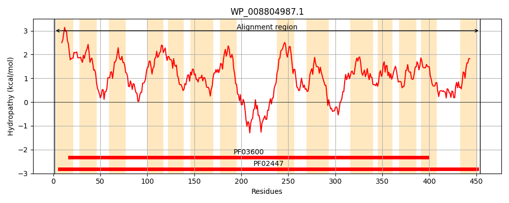
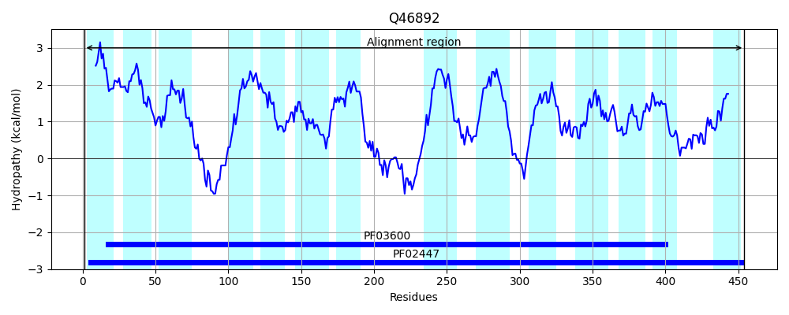
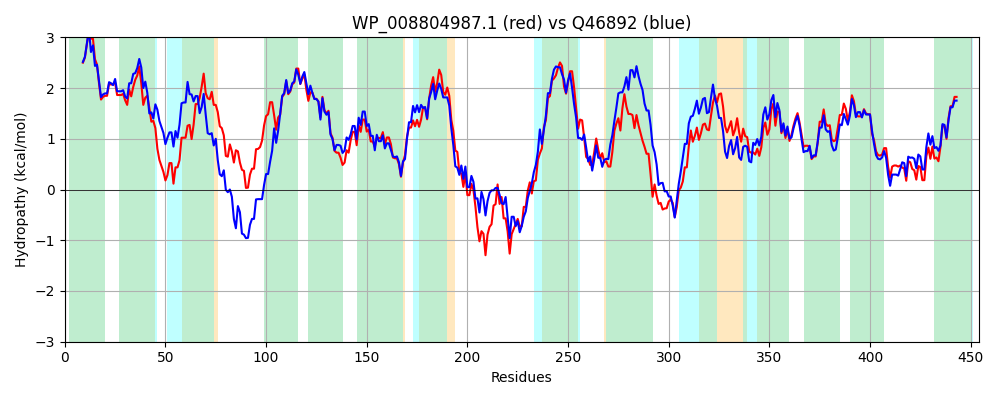

Hit Accession: Q46892
Hit TCID: 2.A.8.1.7
Hit Description: gnl|BL_ORD_ID|13694 gnl|TC-DB|Q46892|2.A.8.1.7 Inner membrane permease ygbN OS=Escherichia coli (strain K12) GN=ygbN PE=1 SV=1
Mach Len: 454
e:0.000000
Query TMS Count : 14
Hit TMS Count: 14
TMS-Overlap Score: 12.950000
Predicted Substrates:None
BLAST Alignment:
Score: 1428 , Bit scores: 554 bits, E-value: 0.0e+00, Alignment length: 454, Percentage identity: 62
Query: 1 MSTSALLLIALASVVLLLLLVIKAKAHPFVALLIVSLLVAFATGIPADKIITTIEKGMGGLLGHIASIIILGSMLGVLIEMSGGAESLAKTLTGVLGAKRTIAALTIVAFILGTPVFFEVGFIIIIPLIYGFSKVAHVSPLKFGLPMAGVMLTVHVALPTHPGAAAAAGILHSDVGWLMLAGIGVSIVVGIVGYFVARFINRRHYHLSINVLEQQQTAEVPDLSVNAQQTRLPPPNALVIGGLIVVPIMLIVSGTLCQALLLPENAVRQLMTVIGTPPVALLISLGLASWTLGIRRRMSLKKLGEVTGSAIPSSADVILVAGAGGAFGGVLVASGIGNALAEALETIHLPLMPAAFLLSLVLRASQGSATVAILTTSGLLSQAVIGLDPIQLVLVTLATCFGSLGLSHVNDAGFWVVTRYLGLSVPDGLKTWTVLTTIMGVTGFLITWLLWFVL 454
MST LL IALA V++LLLLVIKAK PFVALL+VSLLVA A GIPA ++ + GMGG+LG + II LG+MLG +IE SGGAESLA + LG KRTIAALT+ AF LG PVFF+VGFII+ P+IYGF+KVA +SPLKFGLP+AG+MLTVHVA+P HPG AAAG+LH+D+GWL + GI +SI VG+VGYF A+ IN+R Y +S+ VLEQ Q A + ++ PP ++ LIV+PI +I++GT+ L+ P + + + +IG+P VAL+I+L LA W L +RR SL+ ++ GSA+P++A VILV GAGG FG VLV SG+G ALA L+ I LPL+PAAF++SL LRASQGSATVAILTT GLLS+AV+GL+PIQ VLVTLA CFG LG SH+ND+GFW+VT+YLGLSV DGLKTWTVLTTI+G TGFLITW +W V+
Sbjct: 1 MSTITLLCIALAGVIMLLLLVIKAKVQPFVALLLVSLLVALAAGIPAGEVGKVMIAGMGGVLGSVTIIIGLGAMLGRMIEHSGGAESLANYFSRKLGDKRTIAALTLAAFFLGIPVFFDVGFIILAPIIYGFAKVAKISPLKFGLPVAGIMLTVHVAVPPHPGPVAAAGLLHADIGWLTIIGIAISIPVGVVGYFAAKIINKRQYAMSVEVLEQMQLAPASEEGATKLSDKINPPGVALVTSLIVIPIAIIMAGTVSATLMPPSHPLLGTLQLIGSPMVALMIALVLAFWLLALRRGWSLQHTSDIMGSALPTAAVVILVTGAGGVFGKVLVESGVGKALANMLQMIDLPLLPAAFIISLALRASQGSATVAILTTGGLLSEAVMGLNPIQCVLVTLAACFGGLGASHINDSGFWIVTKYLGLSVADGLKTWTVLTTILGFTGFLITWCVWAVI 454 | Protein Hydropathy Plots: |
|---|
|  |  |
Pairwise Alignment-Hydropathy Plot:
|
|---|
|  |